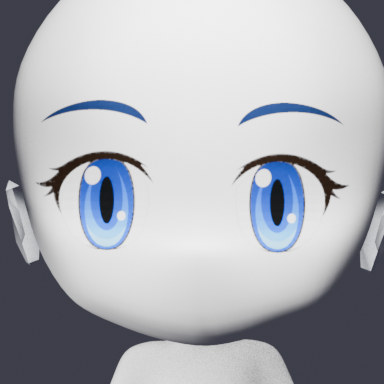
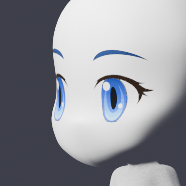

AssetsLab Movement Gallery
页面保留移动动画基线，并展示经过明确标注的眼睛结构候选。眼睛状态图只用于离线架构验证，尚未接入完整步态或随机调度。
Walk release baseline v78
移动基线用于确认四方向、完整步态周期和身体采样合同；它不是眼睛实验候选。
四方向 3D 渲染


四方向像素化预览


EyeAssemblyV1 actor-native four-view test
Test candidate only: this uses Actor V1's native open textures on the new 3D assembly. It is not a final pixel asset.
Single 3D assembly projection


EyeAssemblyV2 actor-based blink states
State texture test only: open uses Actor native textures; half and closed were generated with image_gen from the Actor reference and projected through the same head-parented 3D surfaces. No random scheduling or walk integration yet.
Front state sequence

Three-quarter projection check

EyeAssemblyV2 actor-based deterministic blink walk
WIP：open 使用 Actor 原生资源，half/closed 使用基于 Actor 参考的 image_gen 状态；此处验证完整 8 帧身体采样和一次确定性眨眼，不代表最终像素画，也未加入随机调度。
四向 3D 渲染


四向 64px 预览